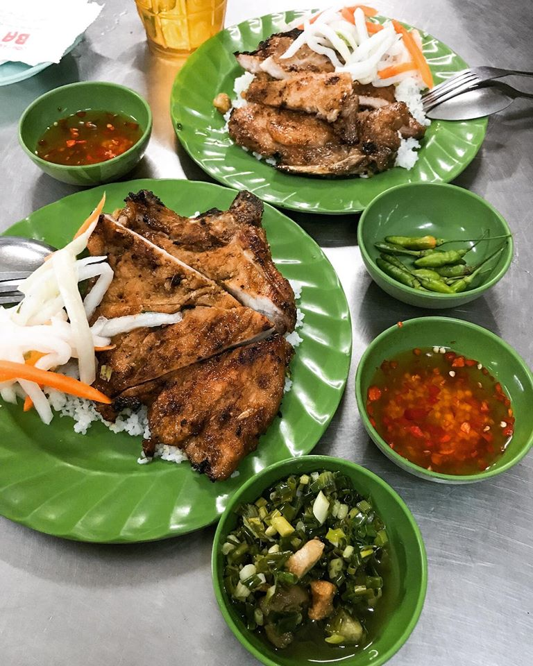

Những quán cơm tấm ngon có tiếng ở Sài Gòn
Nếu Hà Nội nổi tiếng với bún chả, phở bò thì Sài Gòn lại đặc trưng bởi món cơm tấm ngon nhức nách. Người Sài Gòn đi đâu lâu ngày, đặc biệt nếu phải ra miền Bắc thì ai ai cũng nhớ về hương vị của những miếng sườn nướng thơm nức dai dai đặt trên những hạt cơm tấm chan với mỡ hành thơm lừng.
Đặc trưng của cơm tấm Sài Gòn
Cơm tấm được làm từ loại gạo tấm, tức là loại gạo hạt nhỏ, có phần hơi nát. Khi ăn, hạt cơm tơi, có màu trắng hơi đục, có phần hơi khô chứ không tròn trịa và trắng dính như loại cơm mà ở nhà ta hay thường ăn. Tuy nhiên loại cơm này khi ăn ta lại cảm thấy ngọt trong cổ, xốp, và vô cùng thơm. Ăn cùng cơm tấm thường có sườn nướng, bì heo, trứng ốp la, trứng hấp, đấy là cơm tấm đúng chất Sài Gòn nhất. Về sau để đa dạng hơn cũng như phục vụ những người ăn, các quán cơm tấm bắt đầu chế biến thêm nhiều món như gà nướng, gà kho, cá kho, xúc xích vv.. tạo nên một bàn ăn với màu sắc vô cùng phong phú.
Khi khách kêu cơm, người bán sẽ xới cơm còn nóng hổi từ nổi, cho đồ ăn và rưới thêm một lớp mỡ hành lên trên. Ăn kèm cơm thường có đồ chua từ cà rốt củ cải, canh cải chua thịt bò hoặc dưa leo. Đặc biệt không thể thiếu chén nước mắm ớt. Ngoài miếng thịt sườn thơm phức nóng hổi ra thì nước mắm cũng chính là một phần linh hồn không thể thiếu làm nên hương vị đặc trưng của món cơm tấm. Nước mắm được pha thêm cùng đường và ớt tạo nên vị mặn ngọt cay cay, kết hợp cùng một chút đồ chua hoà quyện lại rưới lên miếng sườn nóng hổi bóng bẩy vô cùng đậm đà và thơm ngon.
Miếng sườn nướng to bao trọn cả dĩa cơm giúp người ăn no bụng và có đủ sức để làm việc. Ảnh Thảo Như
Điểm danh những quán cơm tấm ngon ở Sài Gòn
Cơm Tấm Mai – 129 Đoàn Văn Bơ, Quận 4
Mức giá: 28k – 55k
Nếu có dịp đến quận 4 và thấy một quán cơm tấm với mùi thơm nức mũi, khách đông nghịt thì rất có thể bạn đã gặp quán cơm tấm Mai rồi đấy. Dù chỉ là một quán ăn nhỏ nhưng nơi đây cực kỳ thu hút khác. Hạt cơm tại đây có tơi vừa phải, không quá khô, cơm thơm. Sườn tảng hay sườn cọng thì thịt đều có độ mềm vừa phải, nướng còn nóng hổi và không bị khô và tẩm ướp vừa miệng. Miếng sườn ở đây khá to, bằng cả dĩa cơm nên nhiều khi ăn hết miếng sườn rồi và vẫn thiếu cơm ấy chứ. Nước mắm ở đây hơi kẹo, không bị mặn hay ngọt gắt, khi rưới lên miếng sườn tạo nên sự đậm đà kết hợp cùng mỡ hành béo béo rất đưa cơm. Chả trứng muối cũng là một món best seller nơi đây với vị bùi của trứng hấp, mằn mặn của trứng muối, độ hấp vừa phải nên trứng không bị bở. Khi chấm cùng nước mắm cay cay thì rất vừa miệng.

Miếng sườn nướng to bao trọn cả dĩa cơm giúp người ăn no bụng và có đủ sức để làm việc. Ảnh Thảo Như
Cơm tấm bãi rác – 73 Lê Văn Linh, phường 13, quận 4
Mức giá: 70k- 150k
Nghe cái tên thì có vẻ hơi mất vệ sinh đối với những ai chưa từng đến quán, tuy nhiên quán cơm tấm bãi rác ở đây luôn trong tình trạng đông đúc người đến ăn vì hương vị thơm ngon và vô cùng … đảm bảo vệ sinh. Đây là quán cơm tại gia ngay khu tập kết rác của chợ Xóm Chiếu nên hầu hết đều là người dân trong khu chợ đến ăn. Một điều lạ lùng của quán cơm tấm nức tiếng này nữa chính là dù nằm ngay khu ọp ẹp và chỉ là hàng quán ven đường nhưng có mức giá khá sang chảnh, giao động từ 70k – 100k/ 1 dĩa cơm.

Bà chủ quán luôn tất bật làm món ăn đưa lên cho khách. Ảnh ST
Cơm tấm bà Ròm – 55 Phan Đình Phùng, Phú Nhuận
Mức giá: 35k – 55k
Cơm tấm Sài Gòn có ngon hay không không chỉ nằm ở cách nêm nếm mà còn ở cái lòng người bán hàng. Người ăn cơm dù tại chỗ hay mua về đa phần ai cũng tất bật vội vã để ăn cơm cho nóng, ăn cho no để tranh thủ chợp mắt một chút trước giờ làm, giờ học. Hơn thế quán cơm tấm cũng thường rất đông, chả mấy ai có thể ngồi nhâm nhi trầm tư để thưởng thức từng dư vị tan trọng miệng của mỗi đĩa cơm. Ấy thế mà không bởi vậy mà vợ chồng bà Ròm làm đại khái qua loa mà vẫn rất chăm chút chỉn chu trong từng hương vị món ăn của mình. Hạt cơm tấm mềm, dẻo, luôn được giữ nóng hổi, thơm phức. Miếng sườn to, mềm, ngọt, mọng nước và thơm nồng mùi mật ong. Thịt được bà tẩm ướp vừa miệng được quết lên một lớp mỡ hành bóng bẩy khi kết hợp với nước mắm mặn ngọt vô cùng đậm đà và vừa miệng.

Bà chủ quán luôn tất bật làm món ăn đưa lên cho khách. Ảnh ST
Cơm tấm đã trở thành một phần linh hồn làm nên một Sài Gòn rất khác trong lòng những người đã và đang sinh sống tại thành phố nhộn nhịp này. Thậm chí có những nơi bạn chỉ tốn có 15k là đã có ngay một đĩa cơm nóng hổi thơm phức nhưng đủ để no bụng sau một ngày làm việc vất vả. Hãy cùng Vntrip khám phá thêm nhiều món ăn thơm ngon hấp dẫn khắp dải hình chữ S Việt Nam để thấy thêm yêu mến quê hương mình nhé.
Không